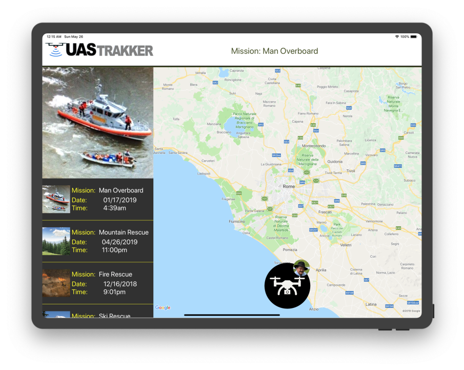
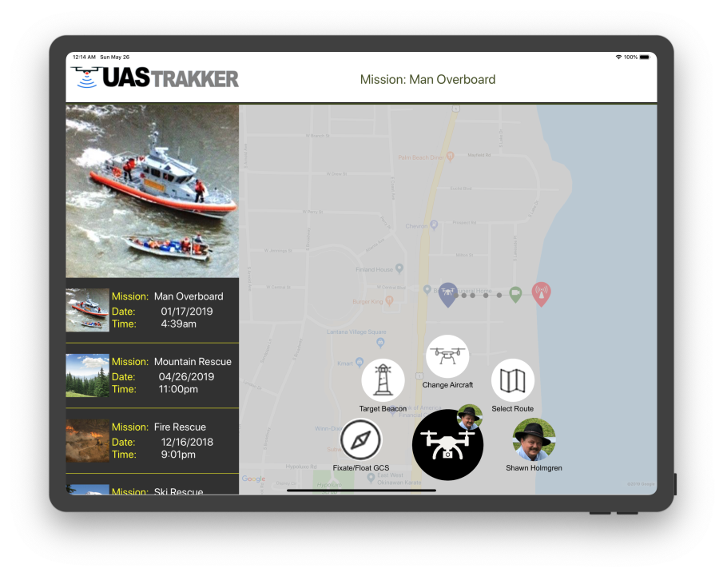
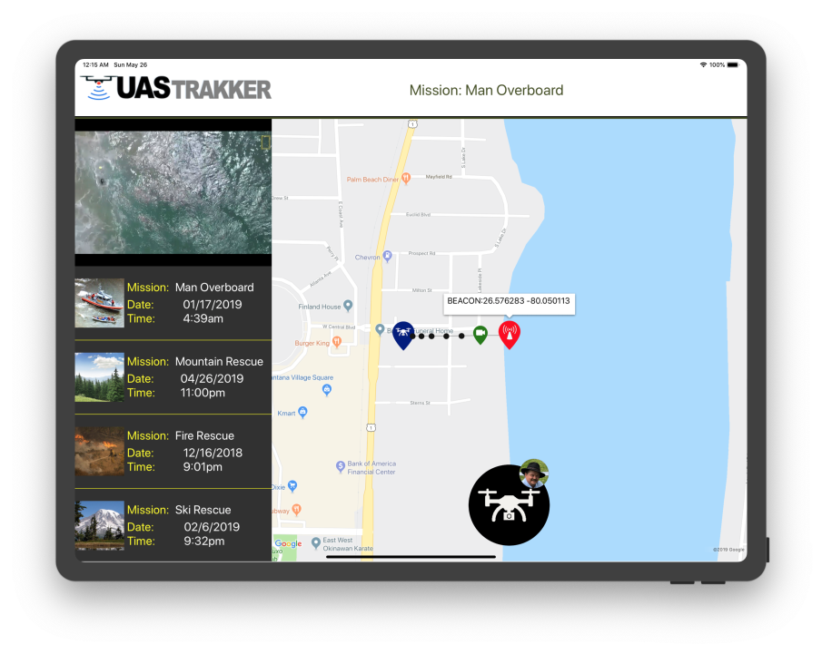
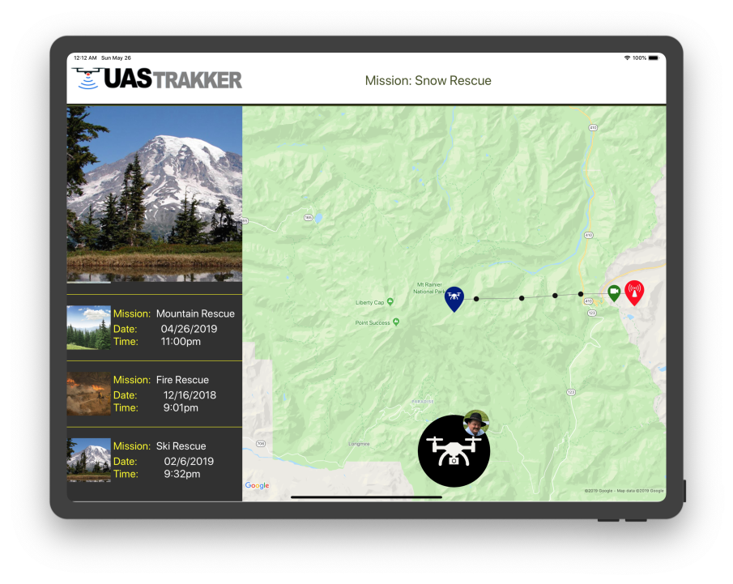

Give an unmanned aerial system the eyes to find a person in trouble — locate, track and follow a radio-frequency personal locator beacon from the sky, in real time.
People pursuing risk-prone activities — remote, off-grid, hard to reach — can carry a radio-frequency personal locator beacon. When something goes wrong, finding them fast is everything.
UAS Trakker turns a custom unmanned aerial system into an autonomous spotter: it detects the beacon's RF signal, pinpoints the location on a live map, and keeps the aircraft locked on — tracking and following the target as it moves, and streaming position back to the team on the ground.
I developed the UAS Trakker application on Xamarin.Forms — wiring live mapping and cloud telemetry into a single, field-ready interface for locating and following beacons.
A continuous loop that keeps the aircraft on target from first ping to recovery.
Detect the RF beacon and fix its position.
Plot the target live on the map.
Keep the aircraft locked on as it moves.
Acquires signal from radio-frequency personal locator beacons.
Real-time positioning and target plotting on Google Maps.
Keeps the UAS locked on a moving target automatically.
Streams position and status through Azure cloud services.
The operator's view: aircraft, flight path, and the beacon target with a live lock reticle.
UAS Trakker running in the field. Click any screen to enlarge.




A cross-platform Xamarin.Forms application with live Google Maps positioning and Microsoft Azure cloud services carrying telemetry between the aircraft and the ground team.